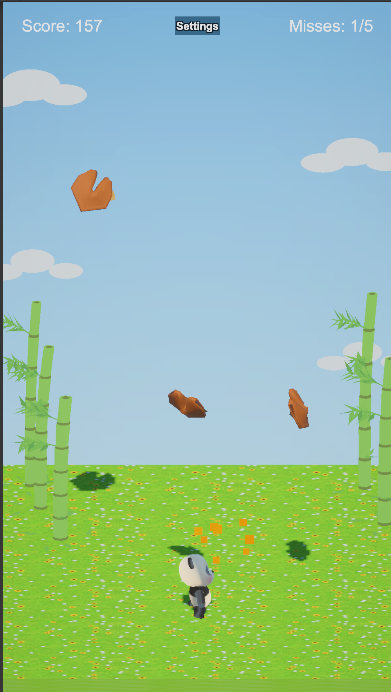
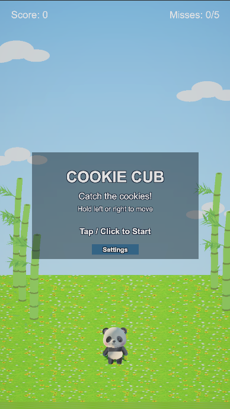
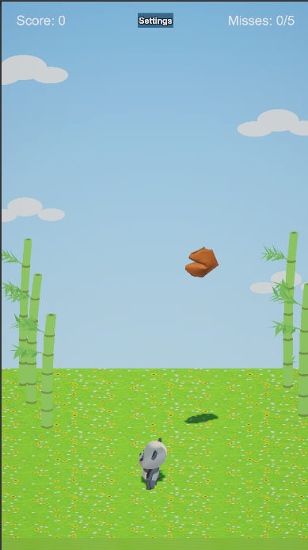
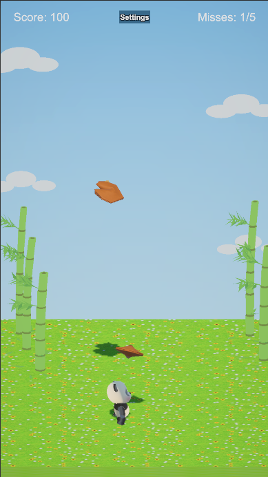
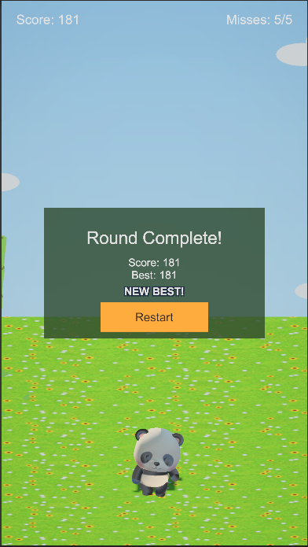

Bamboo Vale Games presents
In development
Cookie Cub
Catch good fortune—one falling cookie at a time.
Guide an adorable panda left and right in this simple portrait arcade high-score game. Miss five cookies and the round is over; hang on as the challenge keeps growing.





A small arcade moment
How it plays
- Guide the cub left and right beneath the falling cookies.
- Catch fortune cookies to build your high score.
- Keep moving as the difficulty increases.
- Five misses end the round—then it is time for a celebration dance.